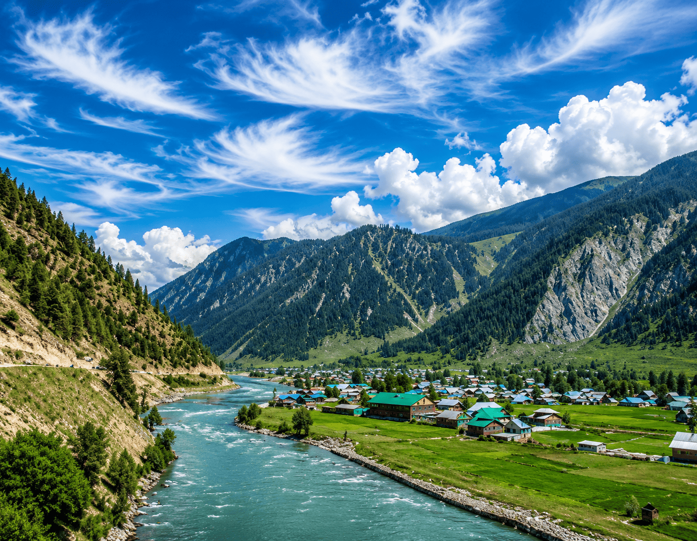

Offbeat Kashmir
More roads less travelled, closer to home.
Explore
Cross from the Meadow of Flowers to the Land of High Passes — turquoise Pangong, Nubra's dunes and monasteries balanced on the sky, guided by a team that lives at altitude.
Expedition Collection
₹36,500 / person
Leh · Nubra · Pangong
₹58,900 / person
Kashmir + Ladakh combined
₹52,500 / person
Hanle · Tso Moriri · Changthang
Altitude, Respected
Ladakh's magic lives above 3,500 metres — and so do its risks. Our itineraries are built around gradual ascent, mandatory rest days, daily oximeter checks and vehicles carrying oxygen. Fourteen years of mountain judgement means we'd rather adjust a plan than push a guest.
You'll feel it in the small things: earlier starts to catch still water at Pangong, hotel rooms chosen for warmth, thermoses of ginger tea appearing exactly when the pass gets cold.
The Local Difference
Fourteen years, twelve thousand guests and a rating we protect more carefully than fresh powder.
Founded and run by Gulmarg-born guides since 2011. We open doors — and valleys — that ordinary operators never see.
Certified, first-aid-trained teams, conservative calls and 24/7 support so you can relax into the journey.
Every itinerary bends to you — dates, pace, comfort level and add-ons. Tell us your dream and we build around it.
Good to Know
Gradual ascent, mandatory rest days, daily oximeter checks and oxygen in every vehicle.
June to September for open passes; late September adds golden light and thinner crowds.
Inner Line Permits for Nubra, Pangong and Hanle are all arranged before you arrive.
Good to Know
Every itinerary begins with two easy days in Leh (3,500 m) before any high pass. Guides carry oximeters and oxygen, monitor guests daily, and itineraries always sleep lower than the day's highest point.
June to September for open passes and warm days. Late September adds golden poplars and thinner crowds; winter expeditions (like frozen-river walks) are special arrangements.
Beautifully. Our Srinagar–Leh overland route crosses Zoji La and Kargil, turning the transfer itself into one of the world's great road journeys.
Inner Line Permits are needed for Nubra, Pangong and Hanle areas. We obtain all permits for you before you arrive.
Ladakh summers are short and demand books fast — tell us your month and we'll build the crossing.